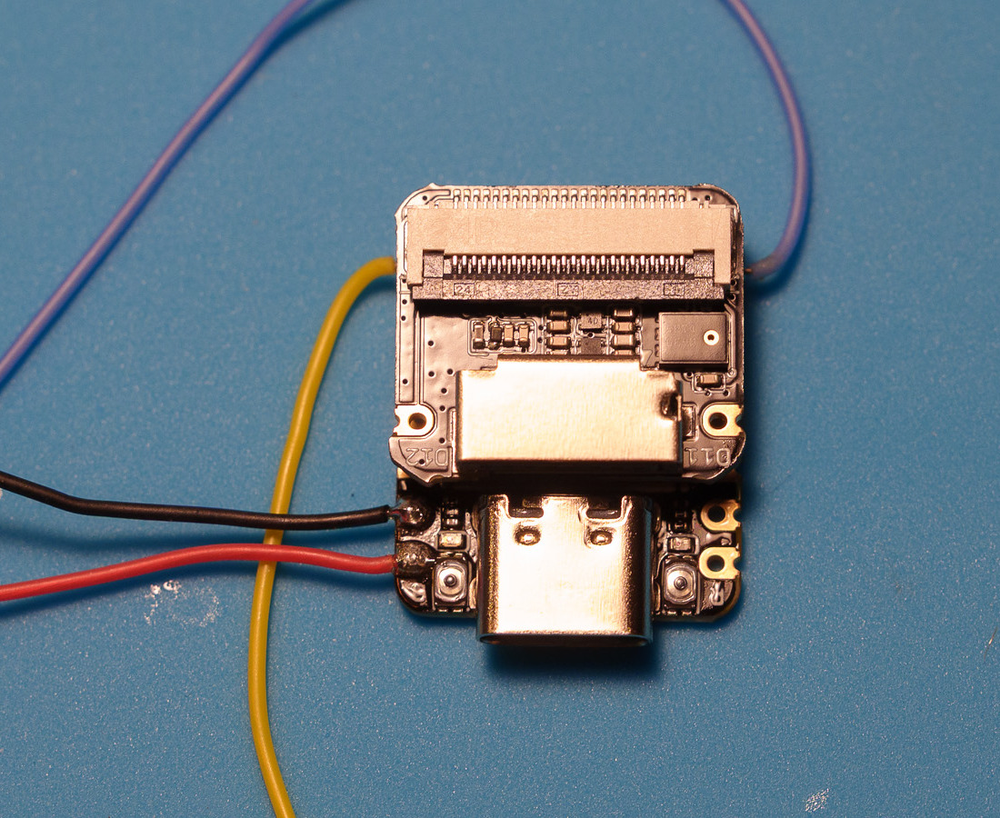
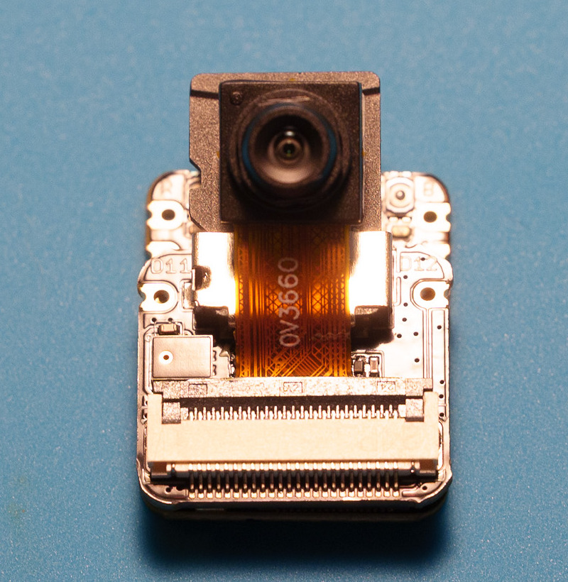
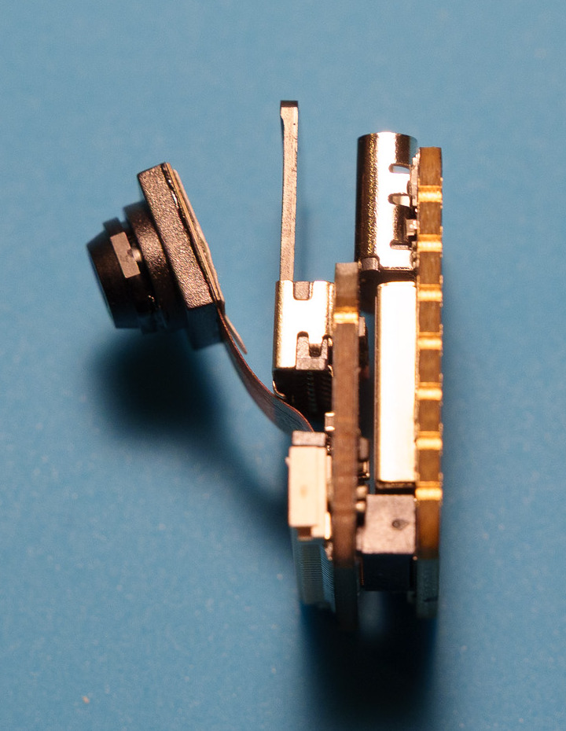
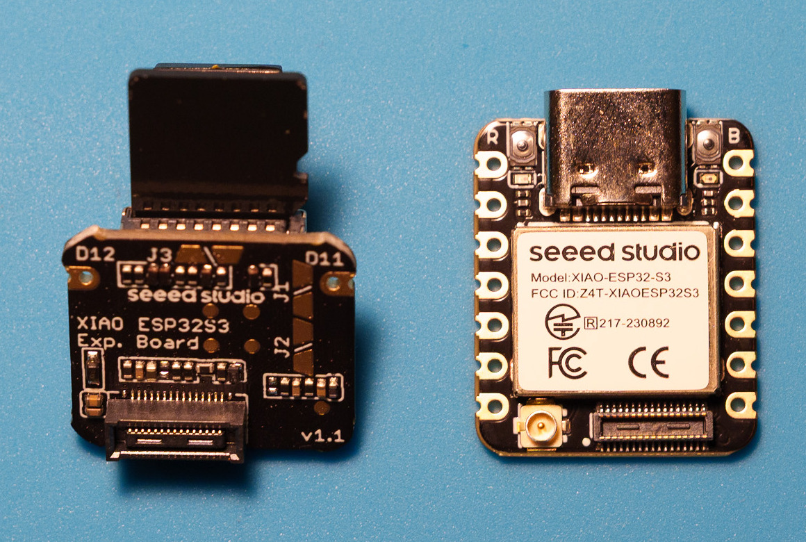
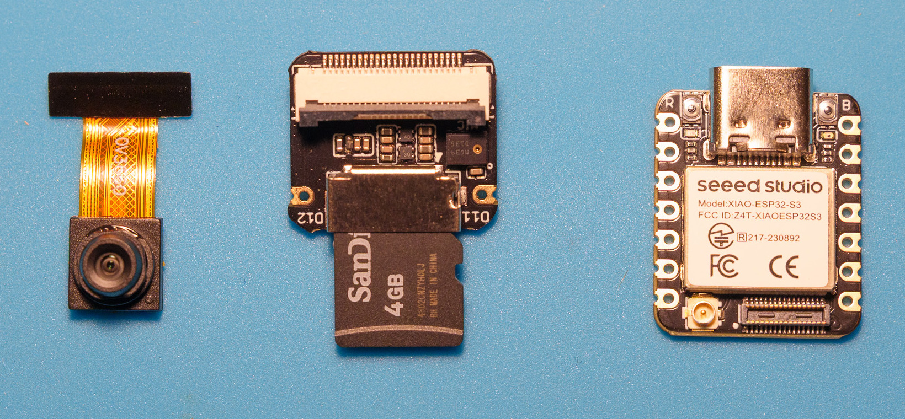
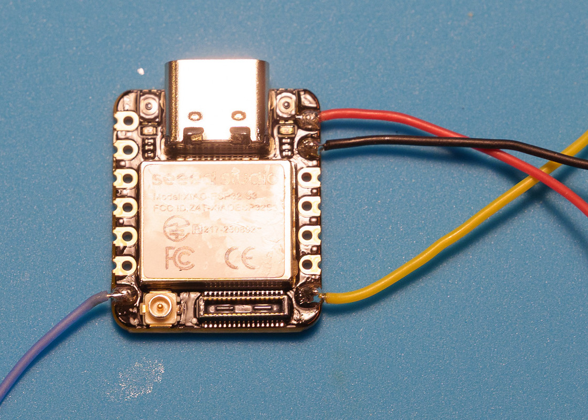

FPV Audio Recorder
Onboard FPV audio without an extra action camera. A tiny, battery-free recorder designed to save audio to microSD while the quad is armed.

The build
Seeed Studio XIAO ESP32S3 Sense, Sense microphone and microSD board, no separate battery. The camera has been removed to save weight. The flight controller will provide regulated power after its exact pads and available current are checked.
We intend to read Betaflight arm status over a spare UART. The recorder will not issue flight commands. A local Easy Eject preview has flashed the board, monitored chip temperature, and imported a WAV while preserving the microSD original.
The microphone opening sits on the exposed face beside the SD slot. A tiny VHB patch between the boards may secure the stack if it fits a flat gap without lifting the connector; the exact placement and retention still need testing.
Build photographs
Real photographs of this prototype, cropped for a closer view. See the illustrated build guide for the sequence, wire colors and planned diode connection.











Progress
- Complete: microphone, microSD, USB transfer, and two-minute still-air bench recording.
- Complete: local Easy Eject flash, temperature display, and byte-matched WAV import.
- In progress: streaming flight firmware and release packaging.
- Next: exact flight-controller power and UART wiring, followed by props-off testing.
- Next: mounted flight audio and thermal check.
Operating note
Give the powered quad airflow whenever it sits still, including while connected to a computer. The two-minute temperature result is a bench observation, not a flight-temperature or long-idle rating.
A bench firmware candidate is available for testing. The Easy Eject integration is still a local preview, and flight behavior has not been verified.